Медицинское образование
Опыт работы врачом
Окончил лечебный факультет в 1982 году. Затем прошёл дополнительную подготовку по травматологии и ортопедии.
Медицинское образование · психотерапия · творчество
Внимание к человеку. Интерес к его внутреннему миру.
Андрей Сергеевич Горшков соединяет медицинский опыт, психотерапевтическую практику и работу с цветом, формой и материалом.
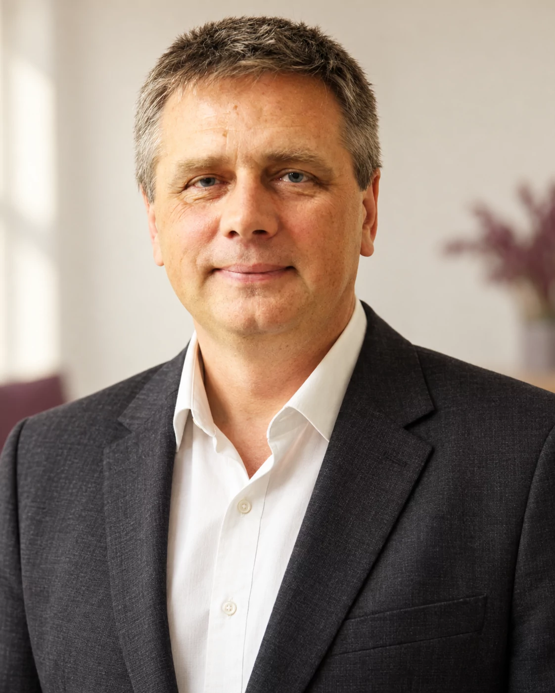
Профессиональная основа
От медициныАндрей Сергеевич начинал как врач-травматолог. Позже его главным профессиональным интересом стала психотерапия: отношения между людьми, эмоциональные переживания и связь состояния человека с телесными реакциями.
Медицинское образование
Окончил лечебный факультет в 1982 году. Затем прошёл дополнительную подготовку по травматологии и ортопедии.
Подготовка в психотерапии
С 1991 года изучал разные подходы к психотерапии, в том числе работу с семейными отношениями и телесными реакциями.
В реестрах Общероссийской профессиональной психотерапевтической лиги указаны два международных сертификата Андрея Сергеевича:
Профессиональные компетенции
Формат работы определяется запросом: индивидуальная или семейная консультация, супервизия, семинар или авторская творческая практика.
Актуальная профессиональная визиткаРабота с отношениями в паре и семье, повторяющимися конфликтами, кризисами и изменениями семейной системы.
Сочетание методов под конкретную историю человека, его состояние, ресурсы и задачу консультации.
Внимание к телесным реакциям, напряжению и связи физического самочувствия с эмоциональным опытом.
Цвет, форма, рисунок и ручная работа как способы наблюдать внутренний процесс и находить новые смыслы.
Профессиональная работа с коллегами: супервизия и преподавание психотерапевтических подходов.
Авторские образовательные форматы, практические занятия и работа с групповыми процессами.
С чего начать
Можно начать с того, что сейчас беспокоит, и обсудить подходящий формат непосредственно с Андреем Сергеевичем.
Лабиринт как образ пути
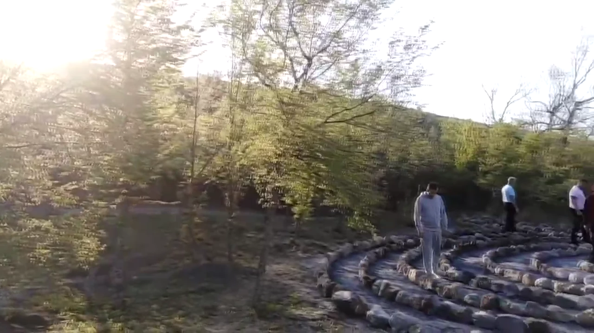
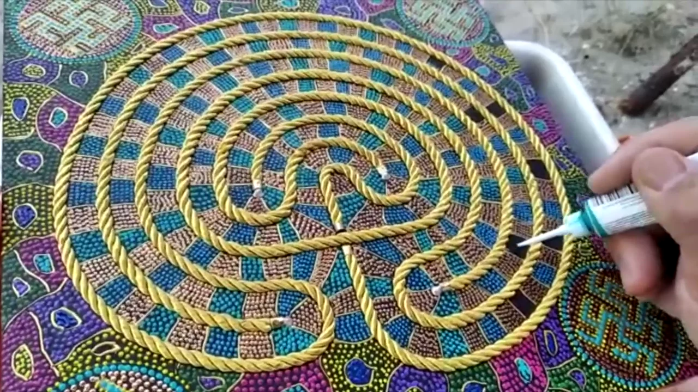
Для мастерской лабиринт — встреча ручной работы, внимания и личного исследования.
У этого образа долгая история. Один из известных сохранившихся примеров — лабиринт Шартрского собора, созданный около 1200 года. В его христианском контексте прохождение пути связано с молитвой и размышлением о жизни.
История на сайте Шартрского собораАндрей Сергеевич создаёт персональные расписные лабиринты из дерева. В описании мастерской представлены настольные работы в раме 30 × 30 см и авторский способ прохождения с указкой. Здесь важны и сам предмет, и опыт взаимодействия с ним.
Самопознание здесь — метафора и творческий опыт, а не обещание диагностики или лечения.
Выбрать направление мастерскойВ рассказе мастерской «Лабиринт Самопознания» описаны четыре этапа работы.
Крым
Лабиринт в центре Валерия Синельникова упоминается в авторском рассказе мастерской как одно из пространств для прохождения.
Ленинградская область
В том же рассказе представлен парк лабиринтов в Рождествено. Возможность посещения и проведения практики можно уточнить у Андрея Сергеевича.
Портфолио мастерской
Персональные лабиринты, мандалы и ИПИ-картины. Каждая работа создаётся вручную и существует как самостоятельное авторское произведение.
Цвет. Форма.
Ручная работа.
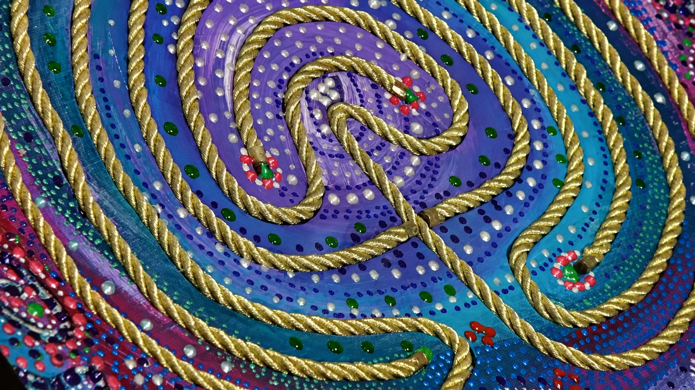
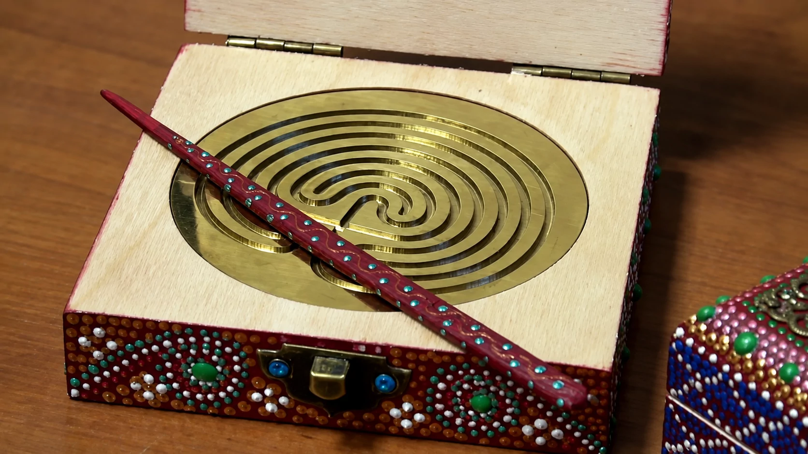
Крупные планы мастерской обработаны с помощью ИИ. В галерее ниже — исходные фотографии авторских работ.

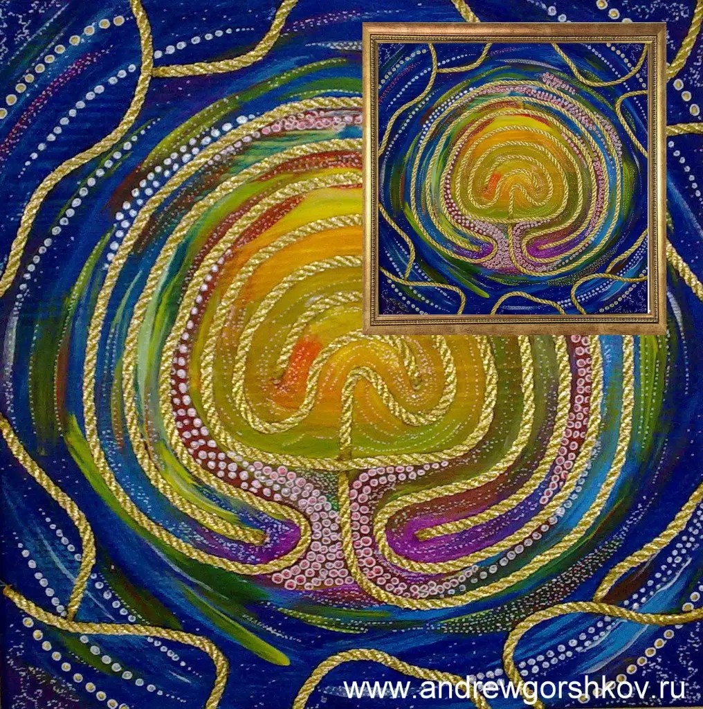
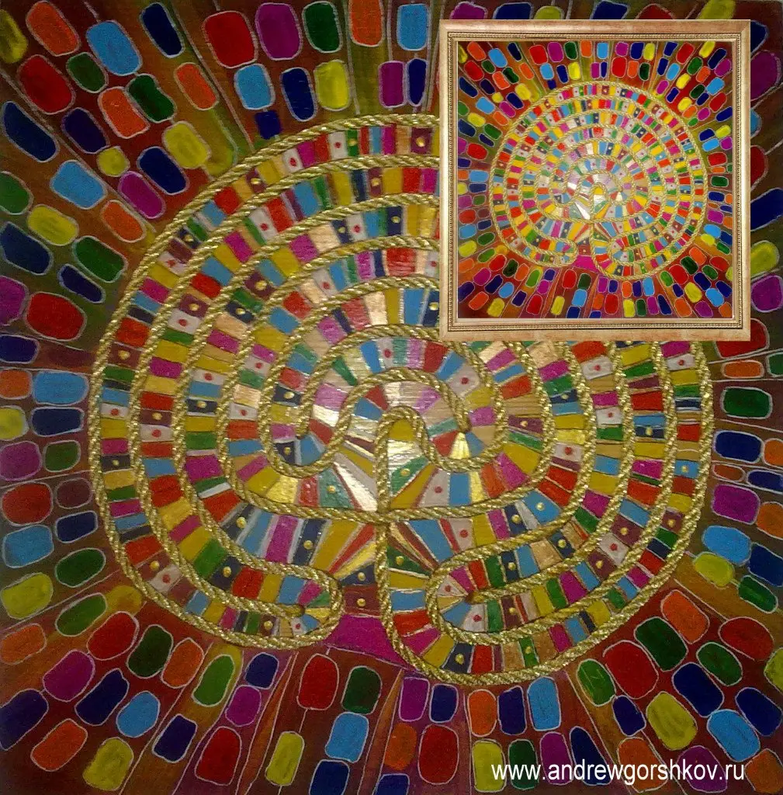
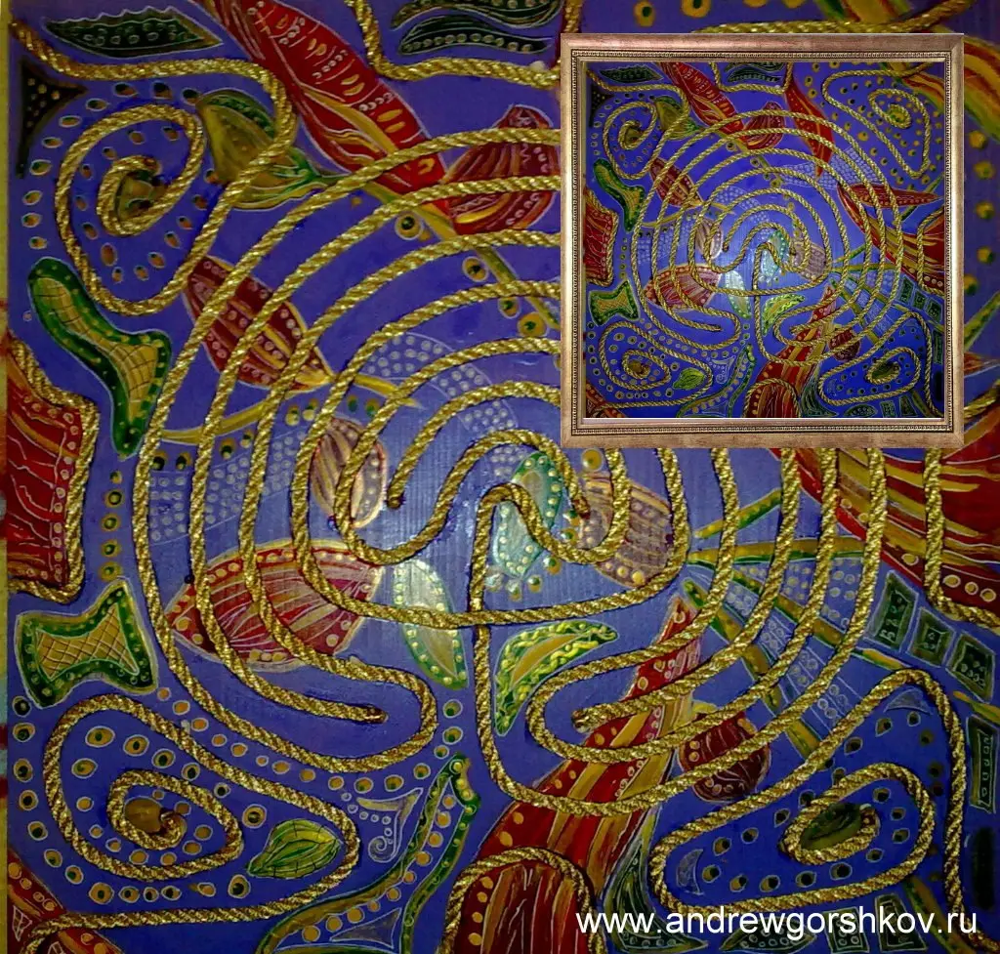
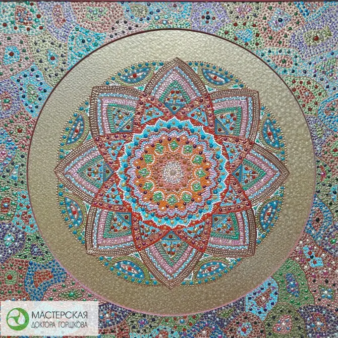
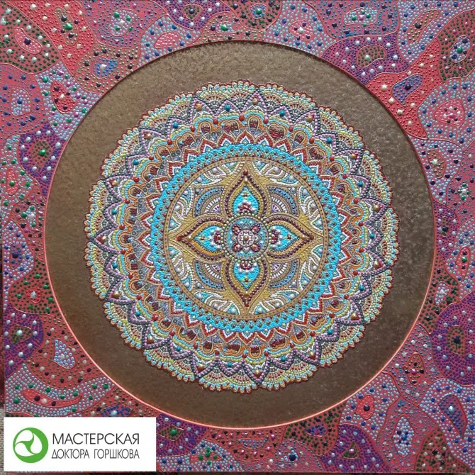
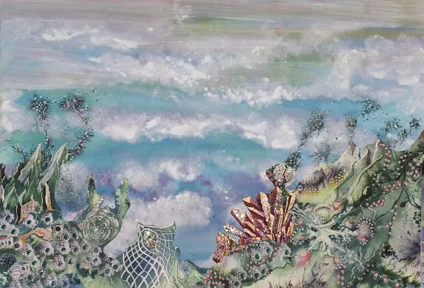
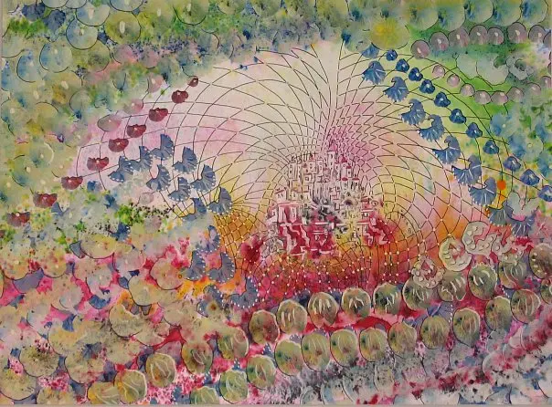
Нажмите на работу, чтобы рассмотреть её крупнее. Фотографии произведений — из архива мастерской. Наличие и возможность заказа уточняются лично у автора.
Архив коллекцииБутик мастерской
Это знакомство с направлениями мастерской, а не каталог наличия. Конкретную работу, возможность заказа и стоимость лучше обсудить с автором.
Расписные деревянные работы и авторская практика прохождения.
Авторские материалыМентальная графика: цвет, повторение, ритм и точечная роспись.
Авторские материалы«Индифферентные произведения искусства» — авторское название серии. Пространство для личного восприятия образа и состояния.
Авторские материалыОтдельное направление на авторском сайте. Название сохранено в формулировке мастерской; оно не означает доказанного лечебного действия.
Авторские материалыПалочки из крымских пород деревьев — ещё одна сторона работы автора с природным материалом.
Авторские материалыМногослойные композиции из берёзовой фанеры: лазерная резка, работа лобзиком, роспись акрилом и аэрография.
Авторские материалыСтаринный предмет становится частью расписной композиции. Деревянная рама продолжает рисунок и цвет самой работы.
Авторские материалыПредметы для интерьера с расписными основаниями в виде прялок. Представлены на фотографиях авторской выставки.
Авторские материалыЗнакомство с подходом автора в живом общении. Ближайшие даты и доступные форматы уточняйте лично.
Авторские материалыПонравилась работа? Сохраните её название или фотографию и задайте вопрос Андрею Сергеевичу.
Обсудить изделиеОб авторе
Медицина и мастерская появились в его жизни почти одновременно.
Андрей Сергеевич родился 12 октября 1959 года в посёлке Мга Ленинградской области — в семье врача и машиниста поезда.
Медицинские книги матери и мастерская отца задали две главные линии: помощь человеку и создание вещей своими руками. Позже они соединились в профессиональной практике и авторской мастерской.
Профессиональный путь
Образование, профессиональная подготовка и авторская практика — этапы одного пути.
Лечебный факультет медицинского института; работа врачом-травматологом.
Подготовка по травматологии, ортопедии и хирургии.
Обучение работе с личными переживаниями, семейными отношениями и телесными реакциями.
Получен Всемирный сертификат психотерапевта. Сведения доступны в профессиональном реестре.
Консультации, супервизия, семинары и создание авторских произведений.
Мастерская в движении
Выставки и публикации
Подтверждённые публикации о выставках в Санкт-Петербурге и Псковской области.
Психотерапия.
Творчество.
Личный диалог.
Контакты
Для записи на консультацию, вопроса о семинаре или авторской работе позвоните Андрею Сергеевичу либо напишите в группу мастерской.
+7 921 919-73-33